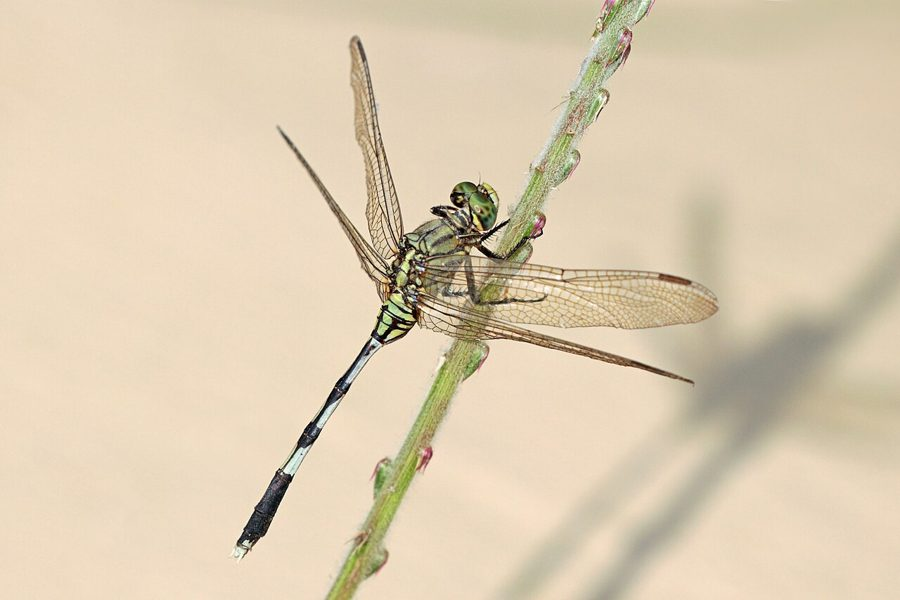

हरी-चित्तीदार व्याधपतंगSlender Skimmer
Orthetrum sabina · Libellulidae · INS-0025

- Scientific name
- Orthetrum sabina (Drury, 1773)
- Family
- Libellulidae
- Hindi
- हरी-चित्तीदार व्याधपतंग
- Status here
- native
- IUCN
- LC
When to look कब देखें
Present all year.
हरी-चित्तीदार व्याधपतंग / Slender Skimmer
Orthetrum sabina (Drury, 1773) — Libellulidae
हरी-चित्तीदार व्याधपतंग (स्लेंडर स्किमर) — पूर्वी उत्तर प्रदेश के तालाबों, नालों, धान के खेतों और बगीचों में पाई जाने वाली एक अत्यंत आम और आक्रामक शिकारी ड्रैगनफ्लाई है। इसका शरीर मुख्य रूप से चमकीले हरे और काले रंग की धारियों (green and black stripes) से ढका होता है। इसकी सबसे बड़ी पहचान इसकी बेहद पतली और लंबी पूंछ (slender abdomen) है, जिसके शुरुआती तीन हिस्से (segments 1-3) अत्यधिक फूले हुए या मोटे होते हैं, जो इसे एक अनोखा "डंबल" (dumbbell) जैसा आकार देते हैं। यह ड्रैगनफ्लाई हवा में उड़ते हुए छोटे मच्छरों, मक्खियों और यहाँ तक कि अपनी ही प्रजाति की दूसरी ड्रैगनफ्लाई का शिकार करती है। यह प्रदूषित पानी में भी प्रजनन कर सकती है।
Quick Identification त्वरित पहचान
| Feature | Description |
|---|---|
| Size | Medium-sized dragonfly; total length 45–53 mm; wingspan 70–80 mm |
| Colouration | Bright yellowish-green body with bold black bands and stripes |
| Abdomen | Very slender, black abdomen; segments 1–3 are strongly swollen and green |
| Thorax | Yellowish-green with irregular, thick black lines |
| Eyes | Large, compound eyes, bright green or olive-green when adult |
| Wings | Completely clear and transparent; a small blackish-brown spot (pterostigma) near the wing tips |
Field tip: Look near the edges of village ponds or in fields. Identified by its green-and-black zebra-striped body and its very thin black abdomen with a bulbous green base. It frequently perches on low twigs with its wings tilted forward.
Morphology आकारिकी
Biometrics (typical measurements for adult specimens in local wetlands):
| Measurement | Range |
|---|---|
| Total body length | 45–53 mm |
| Hindwing length | 30–36 mm |
| Abdomen length | 32–38 mm |
Body details: The head is large and dominated by green compound eyes that meet broadly at the top. The thorax is green or greenish-yellow with irregular, thick black bands. The abdomen is very long and thin, black in color with small yellow-green rings. Abdominal segments 1 to 3 are highly swollen, forming a bulbous base that contrasts sharply with the narrow segments 4 to 10. The legs are black, covered in short spines for holding prey.
Behaviour & Ecology व्यवहार और पारिस्थितिकी
Aggressive sit-and-wait predator.
- Perching behavior: Spend most of their time perching on low twigs, dry grass, or stones near the water, scanning the surroundings. They fly out to grab prey in mid-air and return to a perch to consume it.
- Cannibalism: Highly aggressive predators. They not only eat small flies and mosquitoes but also attack and devour other dragonflies and damselflies, sometimes of their own size.
- Pollution tolerance: Highly tolerant of organic pollution, enabling them to breed in dirty village drains and concrete tanks.
Ecological Role पारिस्थितिक भूमिका
Benthic and aerial predator.
- Mosquito control: Both larvae (in water) and adults (in air) feed heavily on mosquitoes, serving as an important natural pest regulator in villages.
- Pollution biomonitor: Their presence in high ratios compared to sensitive dragonflies indicates degraded or organically polluted water bodies.
Life Cycle / Phenology जीवन चक्र
- Breeding: Mates in flight near water. Breeding peaks during the hot humid monsoon months.
- Egg laying: The female flies low over the water surface, repeatedly tapping the tip of her abdomen on the water to release eggs (oviposition), often guarded by the male flying above her.
- Larval stage: The aquatic nymphs (naiads) live in mud and weeds, hunting underwater insects for 3–6 months.
- Emergence: The mature nymph crawls up a reed stem at night, splits its outer skin, and emerges as the winged adult.
Larval (Naiad) Stage
- Naiad appearance: The naiad is 18–22 mm long, stout, and dark muddy-brown. The body is covered in short hairs that trap silt, helping it hide in the mud. It has a broad, mask-like prementum (lower lip) that shoots forward to capture prey.
- Habitat: Live in the bottom mud and leaf litter of stagnant ponds, slow drains, and marshes.
- Water quality value: Extremely pollution-tolerant. They can survive in highly turbid, low-oxygen waters containing high levels of organic waste, indicating poor water quality.
Host Plants or Prey आहार
Larval prey:
- Mosquito larvae, small aquatic worms, tadpoles, and young fish fry.
Adult prey:
- Flying insects, including mosquitoes, midges, houseflies, small butterflies (such as [INS-0024 Lesser Grass Blue]), and smaller damselflies (such as [INS-0002 Wandering Glider] juveniles).
Predators / Natural Enemies शत्रु
- Birds: Kingfishers (like [BRD-0031 White-throated Kingfisher]) and bee-eaters capture them in flight.
- Frogs: Skipper frogs [AMP-0003 Skipper Frog] catch them from pond edges.
- Spiders: Giant wood spiders [SPD-0002 Giant Wood Spider] catch them in webs.
- Other Odonates: Larger dragonflies like the Lesser Emperor [INS-0026 Lesser Emperor] prey on them.
Agricultural / Human Relevance कृषि प्रासंगिकता
Natural pesticide helper.
- Pest regulation: Consume enormous numbers of rice leafhoppers and crop-damaging moths in Basti's paddy fields, serving as a free biological control agent.
- Vector control: Highly beneficial for public health in Basti villages, directly reducing mosquito numbers near homes.
Expected Locally स्थानीय रूप से अपेक्षित
Not a field record. Written from published accounts for eastern Uttar Pradesh. No confirmed local sighting yet — if you have seen it, that is what the atlas needs.
अभी तक स्थानीय पुष्टि नहीं। यह विवरण प्रकाशित स्रोतों से है, किसी अवलोकन से नहीं।
Abundant throughout Basti district. They are the most common dragonflies seen perching on wire fences, dry twigs, and agricultural paths. They are highly active during warm sunny mornings in August and September.
Distribution वितरण
Global range: Widespread across the Old World, covering southern Europe, North Africa, the Middle East, the Indian Subcontinent, China, Southeast Asia, and Australia.
In India: Abundant resident throughout the country, from the plains to moderate mountain elevations.
In Uttar Pradesh: A very common resident in all districts and cities.
In Basti district / eastern UP: Found in every village pond, roadside drain, and home garden.
Research Questions शोध प्रश्न
Anyone can investigate these | कोई भी इन प्रश्नों की जाँच कर सकता है
- What is the ratio of Slender Skimmers to other dragonfly species in polluted village drains vs. clean forest streams in Basti? — Survey different sites and count species.
- How many mosquitoes can a single adult Slender Skimmer capture during its active morning foraging hour? — Observe perching birds and count successful flights.
- What is the preference of Slender Skimmer naiads for feeding on mosquito larvae compared to carp fry? — Conduct prey choice trials in aquariums.
- How do Slender Skimmers adjust their perching angle to avoid overheating during hot UP summers? / गर्मी के दिनों में शरीर का तापमान नियंत्रित करने के लिए यह ड्रैगनफ्लाई अपने बैठने की दिशा को कैसे बदलती है? — Record perching angles relative to the sun.
- Does the use of chemical pesticides in paddy fields lead to a decline in the population of this dragonfly? / धान के खेतों में कीटनाशकों के प्रयोग से क्या इस ड्रैगनफ्लाई की संख्या में कोई कमी आती है? — Compare counts in organic vs. chemical fields.
Similar Species मिलती-जुलती प्रजातियाँ
| Species | Key Difference | हिंदी |
|---|---|---|
| Orthetrum pruinosum (Crimson-tailed Marsh Hawk) | Male has a bright red abdomen and dark blue thorax; female is brown; abdomen is thicker | लाल ड्रैगनफ्लाई — लाल पूँछ, गहरा धड़ |
| Orthetrum glaucum (Blue Marsh Hawk) | Male has a powder-blue abdomen and dark blue thorax; female is brown; abdomen is thicker | नीली ड्रैगनफ्लाई — स्लेटी-नीला रंग |
| Diplacodes trivialis (Ground Skimmer) | Much smaller (body ~30 mm); male is powder-blue; lacks the green-black stripes and dumbbell-shaped abdomen base | नीली व्याधपतंग — छोटी, जमीन पर बैठना |
Field rule: Medium size, bright green-and-black striped thorax, very slender black abdomen with strongly swollen green segments 1–3 (dumbbell shape), and green eyes identify the Slender Skimmer.
Taxonomy & Classification वर्गीकरण
Original description. Dru Drury described the Slender Skimmer as Libellula sabina in 1773 in his work Illustrations of Natural History (Vol. 1, p. 114, pl. 48, fig. 4). The type locality was China. The genus name Orthetrum combines the Greek orthos (straight) and etron (abdomen), referring to the straight shape of the abdomen. The specific name sabina is of classical origin.
Subspecies. Monotypic — no subspecies are currently recognised in its Asian range.
Family and order placement. Placed in the order Odonata, suborder Anisoptera (dragonflies), family Libellulidae (skimmers).
Phylogenetic notes. Orthetrum sabina belongs to the "sabina group" of the genus Orthetrum, representing a morphologically specialized branch characterized by the swollen abdominal base.
IUCN status rationale. Listed as Least Concern (LC) globally by the IUCN Red List due to its extremely wide geographic range, high population density, tolerance of organic pollution, and lack of conservation threats.
Photo Gallery फोटो गैलरी
References संदर्भ
- Drury, D. (1773). Illustrations of Natural History. Wherein are exhibited upwards of two hundred and forty figures of Exotic Insects. Vol. 1. London, p. 114, pl. 48, fig. 4. [original description]
- Subramanian, K. A. (2009). Dragonflies of India: A Field Guide. Vigyan Prasar, Noida.
- Fraser, F. C. (1936). The Fauna of British India, including Ceylon and Burma. Odonata. Vol. 3. Taylor and Francis, London.
- Mitra, T. R. (2002). Geographic distribution of Odonata (Insecta) of Eastern India. Memoirs of the Zoological Survey of India, 19(1), 1-208.
- IUCN SSC Odonata Specialist Group (2024). Orthetrum sabina. IUCN Red List of Threatened Species. Ver. 2024.
- GBIF Occurrence Data — Orthetrum sabina, Uttar Pradesh (2010–2025).
Source file: species/fauna/insects/slender_skimmer.md